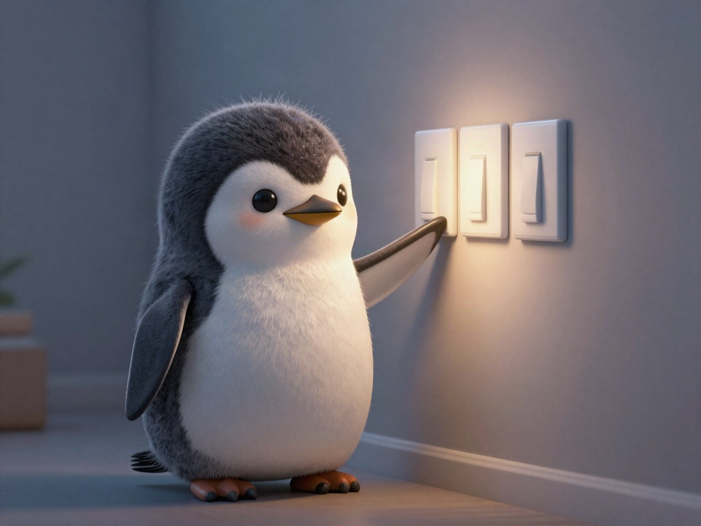

🐧 EVERYDAY LIFE⚡ 29 SEC
I turn off everything that is not now 💡
🧭 Things I Want to Remember
Trying Too Hard
I tried not to think too hard about focusing on now. If I think "focus on now!" too much, I tense up somehow, and it does not go well.
Power Off
The future: off. The past: off. Worry: off. Imagined stories: off.
The Other Way
So it is the opposite way round, but I found that by holding the image of not thinking about anything other than now, of switching the power off, I end up living "here and now" properly after all.
My Reminder
These days, this is what I want to remember.
🔌 0/4
PREVIOUS POST
Perfectionism #3: Choose 3 Things to Leave Behind First